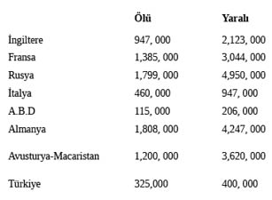

BÖLÜM 13
Wilson Amerika’yı Kandırıyor
Kansas ve Oklahoma gibi eyaletlerin evlatları temiz üniformaları içinde Avrupa’ya ölmeye giderlerken Amerikan vatandaşları ülkelerini savaşa sokan ve savaşı önceden kestirip savaş endüstrisini ele geçiren ahlaksızlara vergileriyle servet kazandırmaktadırlar. Remington silah satışlarını sadece Amerika Birleşik Devletleri’yle sınırlı tutmayıp tüm “Müttefik Güçlerin” en büyük üreticisi olmuştur.
Çarlık Rusya’sı bu firmadan iki milyon tüfek ve binlerce otomatik Colt marka tabanca almıştır. Remington Amerikan Silahlı Kuvvetleri’nde kullanılan tüfeklerin %69’nu ve hafif silah mühimmatının %50’ni sağlamaktadır. Maalesef arşivlerde yer açmak için savaştaki silah satın alım dosyaları yok edildiklerinden sağlayıcılar hakkında net rakamlar vermek imkânsızdır. Gözünü para bürümüş bu karanlık adamların neden oldukları ve 1 Temmuz 1916 tarihinde cereyan eden Somme Muharebesi gibi korkunç olaylara kafaları hiç takılmamıştır. Beş mil kare önemsiz bir arazinin ele geçirilmesi için verilen bu mücadelede 400.000 İngiliz, 200.000 Fransız ve 400.000 Alman askeri ölmüştür. Askerlerimizi bekleyen bu korkunç vahşetin farkında olan Başkan Wilson kendisine Wall Street bankeri J. P. Morgan tarafından iletilen 300’ler Komitesi emirleri uyarınca devletimizi savaşa sokmuştur. I. Dünya Savaşı sonucunda dünya ülkeleri 10.000.000 kayıp ve 20.000.000 yaralı ile baş başa kalmışlardır.

Dünya Savaşı’nın maliyeti 180.500.000.000 dolardır.
(Kaynak: Professor William Langer Coolidge. Professor of History, Emeritus Harvard University 1952)
Bush ailesi 300’ler Komitesi’ne iki dünya savaşında da hizmet etmiş olup karşılığında baba ve oğul Bush’ları Beyaz Saray’a çıkarmaya hak kazanmıştır. Bush ailesinin en önemli destekçileri John Foster Dulles, Allan Dulles, David Rockefeller ve Madeleine Korbel Albright’ın babası Dr. Josef Korbel’dirler.
Albright üniversitedeyken bir yaz Denver Post Kütüphanesinde staj yapmıştır. Burada tanıştığı müstakbel eşi Joseph Medill Patterson Albright Post için çalışan bir gazetecidir. Joseph’in dedesi Yüzbaşı Joseph Medill New York Times’ın kurucusu, yazarı ve editörü olup ayrıca Chicago Tribune’de büyük sermayedardır.
Joseph Medill’in iki kızından biri olan Kate ünlü gıda ve baharat devi Robert Sanderson McCormick ile evlidir. Ailenin 300’ler Komitesi bağlantısı bir taraftan Colorado kurşun ve gümüş madenlerine yaptığı yatırımlarla tanınan Meyer Guggenheim tarafından sağlanmaktadır. Diğer bağlantı ise Presbiteryen Kilisesi ve Amerikan Dışişlerini Komite adına yöneten John Foster Dulles kanalıyla sağlanmıştır.
Tek oğul olan Simon Guggenheim Colorado senatörü olmuş ve 1939 yılında Simon’un yeğeni Madeline Albright’ın müstakbel kayınvalidesiyle evlenmiştir. Dolayısı ile Wilson’dan itibaren her dışişleri bakanının olduğu gibi Albright da Komite’yle bağlantılıdır. Başkan Wilson’dan başlamak üzere Demokrat veya Cumhuriyetçi her başkan Komite’nin yönetimi altındadır.
Tüm bu Komite etkisi Woodrow Wilson ve siyasetinde görülmektedir. Aslında Wilson yönetiminin “House Yönetimi” diye adlandırılması daha anlamlı olacaktır çünkü başkan uluslararası bankacıları temsil eden Albay Mandel House tarafından yönetilmektedir. House’un talimatlarıyla hareket eden Wilson Amerika Birleşik Devletlerinde üç ölümcül yara açmıştır:
-George Washington’un borçlarımızı ödemek, milli para arzını sağlamak için en güvenli yol olarak belirttiği Gümrük Tarife politikası sosyalist prensiplere dayalı göreceli gelir vergisi sistemine dönüştürülmüştür
- Merkez Bankası Amerikan Anayasası tarafından yasak olduğu halde Federal Rezerv kurulmuştur.
- Halkın % 87’sinin muhalefetine rağmen Amerika Birleşik Devletleri I. Dünya Savaşı’na sokulmuştur. Amerikan halkı o tarihten itibaren ekonomik olarak iflas etmiş bir toplum olarak yaşamaktadır.
Roma Kulübü toplantıları değişik isimler altında II. Dünya Savaşı sonrası da devam etmiş olup bu toplantılarda değişik amaçlar için değişik komiteler kurulmuş ve bu kurulan komitelere görevlerini tamamlamaları gereken tarihler verilmiştir. NAFTA ve Başkan Clinton’un geçirdiği Vergi Kanunları böyle projelerdir. Komite proje tarihlerine çok önem verse de bazen gecikmeler kaçınılmaz olmaktadır.
Amerika Birleşik Devletleri’ndeki ilk Roma Kulübü toplantısı “Roma Kulübü Birliği” adı altında 1969 yılında yapılmıştır. İkinci toplantı 1970 yılında “Riverdale Dini Araştırma Merkezi Toplantısı” adı altında Thomas Burney başkanlığında yapılmıştır. Houston yakınındaki Woodlands’da 1971 yılında yapılan toplantı artık gelenek haline gelmiştir. 1971’deki toplantı sonrası Mitchell Enerji ve Gelişim Firması enerji stratejileri toplantısını Roma Kulübü adına düzenlemiştir. 1972 yılında İtalya’nın Bellagio kentindeki toplantıda Vaiz William Sloane Coffin ve Dışişleri Bakanı Cyrus Vance başkanlığındaki toplantıda Roma Kulübü nüfus planlaması stratejisini ortaya koymuştur.
“Dinler arası diyalog konferansları” aslında tek din altında birleşmeyi hedeflemektedir ve dünya nüfusundaki fazlalığı azaltma konusundaki planlama seanslarından oluşmaktadırlar. Bu toplantıların birinden sonra ortaya çıkan en büyük katliamlardan biri Afrika ülkesi olan Rwanda’da Hutuların rakipleri Tutsiler tarafından soykırıma uğratılmalarıdır.
Eski CIA ajanı William Sloane Coffin Presbiteryen Kilisesi tarafından rahipliğe atanmıştır. Coffin Yale Üniversitesi’ne gitmiş ve eğitim sürecinde okulun rahibi olmuştur. Yale sonrası Rockefeller’in New York’taki Riverside Kilisesi’ne katılmıştır. William Sloan Coffin eşcinselliği destekleyen zengin ve sosyetik bir New York ailesinden gelmektedir. Babası Edmund Coffin tanınmış bir avukattır. William ünlü bir piyanist olan Arthur Rubenstein’in kızı Eva Rubenstein ile evlidir. Aslında William Vietnam Savaş karşıtlığı nedeni ile Roma Kulübü’nün gözünde puan kaybetmiştir ancak sonradan rehabilite edilerek Bellagio Konferansı’nda nüfus kontrol projesi başına geçirilmiştir.
Bu konferanstaki ana tema, fazlalık nüfusun yok edilmesi ve Amerika Birleşik Devletleri’nin nüfusunun sınırlandırılmasıdır. Bu toplantı sonuçları 1980 yılında Roma Kulübü ile bağlantılı 4.000 sosyal bilimci ve think-tank üyelerinin katıldığı “I. Gelecek İçin Küresel Konferans” ile taçlandırılmıştır.
Gelecek İçin Küresel Konferans kendisi de bu tip bir konferans düzenlemiş olan Beyaz Saray’ca desteklenmiştir. Beyaz Saray’ın konferansı “1980’ler İçin Beyaz Saray Komisyon Toplantısı” adını taşımakta olup amacı Roma Kulübü kararlarını “Amerikan Gelecek Politikaları Rehberi” adında yayımlamaktır. Komisyon bildirisi “Amerika Birleşik Devletleri ekonomisi endüstriyel çağdan çıkmaktadır” diyecek kadar ileri gitmiştir. Bu sözler âdeta Sir Peter Vickers Hall ve Zbigniew Brzezinski’nin sözlerinin yankıları gibidirler. İşte bu olay bile Amerikan iç ve dış siyasetinin nasıl 300’ler Komitesi’nce kontrol edildiğini göstermektedir.1981 yılında söylediğim gibi biz halk olarak kandırılmış, sosyal, ekonomik ve siyasi olarak Roma Kulübü planlarına teslim olmuşuzdur. Roma Kulübü ise 300’ler Komitesi’nin yönetimi altındadır. 300’ler Komitesi kararlarının uygulamasında Roma Kulübü büyük rol oynamaktadır.
Amerikan halkının bilmediği 300’ler Komitesi tarafından gizlice yönetildiğidir. Her şey Amerikan halkının aleyhine işlemektedir. Var olmak için bu boyunduruktan kurtulmamız gerekmektedir.
Calvin Coolidge’ın başkanlık yarışından itibaren Komite siyasi partilerin tümüne ve hükümete ajanlarını sokmayı başarmıştır. Dolayısı ile hangi partinin seçimi kazandığı önemli değildir. Örneğin Teddy Roosevelt zamanından itibaren tüm başkan adayları Kraliyet Uluslararası İlişkiler Enstitüsü kontrolü altında çalışan Dış İlişkiler Konseyi tarafından seçilmektedir. Amerika’yı II. Dünya Savaşı’na zorla sokarak Anglo-Amerikan vatandaşların hayatlarını karartan Woodrow Wilson, Albay House, Baruch, Prescott Bush ve 300’ler Komitesi üyesi Amerikalı elitist kesimi daha önce tanıdık. Bu gruplar ve 300’ler Komitesi’nce desteklenen Wilson Bob Follette ve Gerald Nye gibi sağduyulu senatörlerin tüm muhalefetlerini göz ardı etmiştir. 1934 yılında senatör Nye Amerika’nın I. Dünya Savaşı’na giriş nedenlerini araştırmak için komisyon kurulmasını istemiş ve savaş çığırtkanlarını “Ölüm Tacirleri” diye nitelendirmiştir. Ancak Nye’ın bu girişimi başarılı olmamıştır.
Beş yıl süren başarısız komisyon sorgulamaları sonrası 1939 yılında aynı hainler dünyada yeni bir ölüm süreci başlatmışlardır. Amerikan halkı yine kandırılıp tuzağa düşürülmüş ve evlatlarını kendilerini hiç ilgilendirmeyen bir savaşta ölüme yollar hale getirilmiştir. İşin ilginç tarafı Amerika havadan ve karadan tehdit altında değildir. Kendi anavatanlarını korumak dışında Amerika’yı savaşa sokan ne olabilir?
Tanınmış yargıçlardan Hannis Taylor sert muhalefet yaparak Senato’ya başvurmuş ve Wilson’un askeri güç kullanımında hiçbir yetkisi olmadığını savunmuştur. Ancak Taylor’un sözleri tüm anayasal dayanağına rağmen sağır kulaklarca duyulmamıştır.
Tavistock Enstitüsü tarafınca beyni yıkanan Amerikan halkı veya Kongre dahil hiçbir organizasyon askerlerimizin yurtdışındaki savaşlara gönderilmelerine seslerini çıkaramamışlardır. Amerika artık ulusal marşını bile okuyacak halde değildir.
Geniş seyirci kitlelerine hitap eden sporlar ve kendisine sağlanan sahte “rahat” yaşam içinde Amerikan halkı ölüm öncesi ortaya çıkan yüksek ateşin yarattığı bir sersemliğe benzer bir duruma girmiştir. Büyük vatansever Hannis Taylor’un öngörüsü doğru çıkmıştır. Yani Cumhuriyetimizin hayatı sonlandırılmıştır.
Bir de seçilme korkusu olmayan yani Komitece atanmış Douglas Dillon gibi adamlar vardır. Halk tarafından seçilmiş hükümetlerin siyasetlerini değiştirmenin en kolay yolu atanmışları kullanmaktır. John Foster Dulles ve kardeşi Allen 300’ler Komitesi’nin kontrol yöntemlerine başka birer örnektirler. Bu kardeşler Komitenin adamları olarak Dışişleri Bakanlığı’nı 1953-1960 arası yönetmişlerdir. Bu kardeşler İlluminati üyesi Dillon’u Hazine Bakanlığı’na getiren kişilerdir.
John Foster Dulles Amerikan Devleti içinde uzun süredir güçlü olan Presbiteryenlerden gelmektedir. Hatırlanacağı gibi East India ve British East India Co. yöneticilerinin önemli bir kısmı siyasi olarak sol görüşü benimsemiş Presbiteryen Kilisesi mensuplarıdır. John Foster Dulles Rockefeller Vakıflarınca finanse edilen ünlü Pasifik İlişkileri Enstitüsü üyesidir. Laurence Rockefeller ise Banff’ta 1933 yılında yapılan görüşmede Amerikan delegasyonunun sekreterliğini yapmaktadır.
1944 yılında Dulles Breton Woods Konferansı’na Amerikan delegesi olarak katılır. Kendisi Rockefeller-Standard grubunca kontrol edilen bir İlluminati üyesidir. “Irk ayrımına karşı hareket”in başlamasından en az yirmi yıl önceden beri Dulles Presbiteryen Kilisesi’nin de parçası olduğu Federal Kiliseler Kurulunu Tek Dünya Devleti temelinde değiştirmeye çalışmaktadır. John Foster Dulles 300’ler Komitesi’nce Birleşmiş Milletleri Amerikan toprakları üzerinde kurmak için görevlendirilmiştir. Dulles gençlik yıllarından beri enternasyonalist akımlar içindedir. Anne tarafından dedesi John Watson Foster Başkan Benjamin Harrison kabinesinde Dışişleri Bakanlığı yaparken amcası Robert Lansing Amerika Birleşik Devletleri’ni kandırarak I. Dünya Savaşı’na sokma tezgâhında başkan Wilson’un Dışişleri Bakanı’dır. Dulles’in Presbiteryen inancı rahip olan babası Allen Macy Dulles ve Presbiteryen misyoneri olan büyükbabası John Welsh Dulles’tan gelmektedir. John Foster’in üniversite olarak Princeton’u seçmesi bu okulun Presbiteryen bir kurum olmasından ve Woodrow Wilson’un bu okulda ders vermesinden kaynaklanmaktadır. Mezuniyet sonrası John ve kardeşi Allen 300’ler Komitesi’nin prestijli hukuk bürosu olan Sullivan & Cromwell tarafından işe alınmışlardır. İkili burada iş yaşamları ülke sınırlarını aşan ve döviz kuru dalgalanmaları karşısında ortaya çıkacak yasal değişikliklere karşı korunması gereken pek çok ünlü işadamıyla tanışırlar. Kardeşlerin bu firmada kazandıkları deneyimler daha sonra federal yasalar haline geleceklerdir. John Foster güneyde Presbiteryen Kilisesi’nde faaliyetlerini devam ettirmiş ve özellikle Alabama Tuscaloosa’daki Stillman College ile ilgilenmiştir. Bu okul 1861 Amerikan İç Savaşı sonrası Kuzeyden gelen yardımlarla zenci Presbiteryen rahipler yetiştirmek için açılmıştır.
Bu okulun finansörlerinden biri William Rockefeller ve John D. Rockefeller ile birlikte National City Bank’ın sahibi olan James Stillman’dır. Bu okula benzer başka bir kurum ise Charlotte, North Carolina’da yer alan Johnson C. Smith Üniversitesi’dir. Woodrow Wilson’un 1918 yılında Versay Barış görüşmelerinde hukuk danışmanı olarak kendi gibi Presbiteryen olan John Foster Dulles ataması sürpriz değildir. Wilson ve Dulles politik kariyerlerinin başında uluslararası sosyalizm hayranı olmuş kişilerdir. Paris dönüşü John Foster Dulles tüm dikkatini Federal Kiliseler Kuruluna odaklamış ve tüm etkisini güneydeki okullardan mezun olan zencilerin Amerika ve yabancı ülkelerdeki hükümetlerde görev almaları için kullanmıştır. Dulles Federal Kiliseler Kurulu Komisyonu başkanı olarak amacını daha da ilerilere taşımıştır. 300’ler Komitesi’nce planlanarak İngiltere ve Amerika Birleşik Devletleri’nce desteklenen Komünist Afrika Milli Konseyi (ANC) Devrimi’nde Güney Afrika Cumhuriyeti’ndeki beyaz yönetime karşı Rahip Alan Boesak ve Rahip Desmond Tutu ajitatörler olarak önemli rol oynamışlardır. Bu adamlar tüm dünyayı dolaşarak ve özellikle Amerika’da, Güney Afrika Cumhuriyeti’ndeki beyaz yönetimi devirecek Mandela ihtilalı için destek aramışlardır. Ancak John Foster Dulles’in Komite için gerçekleştirdiği en önemli görev 1945 yılında delege olarak katıldığı San Francisco Birleşmiş Milletler Konferansı’ndaki performansıdır. John Foster Dulles’in Amerika’da Birleşmiş Milletleri yasal hale getirme başarısını görmek için 1945-1946 Kongre tutanaklarını okumanız gerekir. Bu korkunç bir vatan hainliğidir. Dulles’in ikinci önemli başarısı ise bu konudaki Senato görüşmelerini üç günle sınırlı kılmasıdır. Bu süre senatörlerin kendilerine empoze edilen durum hakkındaki belgelerin dörtte birini bile okumalarına yetmeyecek kadar kısadır.
Dulles tarafından hızlı karar almaya zorlanan Senato Amerikan Anayasasını ihlal ederek suç işlemiştir. Amerikan Anayasası tüm kanun taslaklarının anayasaya uygunlukları konusunda Temsilciler Meclisi ve Senatoda tartışılmaları gerektiğini söylemektedir. Ancak bu böyle olmamıştır.
Joseph Medill Patterson Albright ailesi ve Eugene Meyer’in yatırım firması Cromwell & Sullivan hukuk bürosunun müşterileridir. Ve John Foster Dulles’un bir davayı almadan önce müşteri hakkında her şeyi bilmek istediği bilinir. Bu şekilde Dulles Albright ve karısı Madeline Korbel Albright hakkında her şeyi öğrenir. Komite’nin ajanları aracılığı ile Amerika’da seçilmiş ve atanmışları nasıl kontrol aldığı düşünüldüğünde kendisi de 300’ler Komitesi’nce seçilmiş olan başkan Clinton’ın neden Dışişleri Bakanı olarak Madeline Albright’ı seçtiği daha kolay anlaşılacaktır. Özellikle 1980 seçimlerinde Amerika’daki her önemli pozisyona gelecek adaylar Dış İlişkiler Kurulunca (CFR) seçilmişlerdir. Bu kurul da zaten 300’ler Komitesi’nin Amerika şubesidir. Aday seçimleri yıllık yapılan Bohemya Kulübü toplantısında gerçekleşmiştir. Böylece hainler için başkanlık yarışını kimin kazanacağının önemi kalmamıştır. Heritage Foundation gibi Truva atlarıyla Amerika’daki önemli siyasi görevlere gelecek kişileri 1960’lardan beri Dış İlişkiler Kurulu ve NATO-Roma Kulübü belirlemektedir. Böylece tüm siyasi kararlar 300’ler Komitesi onayını taşımaktadırlar.
John Foster Dulles’ün asıl amacı Kongreyi “küresel ekonomiye” olan ihtiyaca inandırmaktır. Bu “küresel ekonomi” kavramı 1960 yılında İsviçre’nin Cenevre şehrinde imzalanan Ticaret ve Gümrük Tarifeleri Hakkındaki Genel Anlaşma (GATT) ile ortaya çıkmıştır. İşte bu kritik noktada Wall Street bankeri olan Dillon Başkan Wilson tarafından geçirilen “Gümrük Tarifeleri Karşıtı” yasalarda son düzenlemeleri yapmıştır. Bu yasalar sonucunda Amerikan ticaret ve endüstrisi büyük yara almıştır. 1960-1962 GATT görüşmeleri “Dillon Süreci” olarak bilinir.”